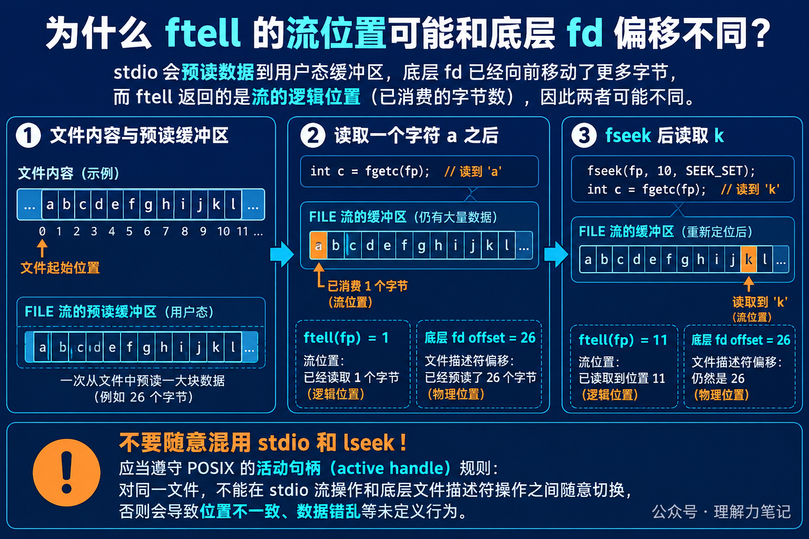

程序只用 fgetc 读了一个字符，ftell(fp) 返回 1，这很直观。可是如果通过 POSIX 的 fileno 和 lseek 去观察同一个文件描述符，可能会看到偏移量已经到了文件末尾。
这不是两个函数算错了，而是它们观察的层次不同。ftell 关心 FILE * 这条标准 I/O 流下一次应该从哪里继续读；底层 fd 的偏移量还要受到流内部预读缓冲的影响。
先记住一句话：
ftell返回的是流的位置指示器。标准 I/O 可能一次从内核多取一些数据放进用户态缓冲区，所以底层 fd 的偏移量可以领先于ftell。
这篇文章的实验运行在 macOS 14.8.8、Apple clang 16.0.0，未在 Linux 主机实测。实验使用 tmpfile 创建普通可定位文件；fileno 和 lseek 是 POSIX 辅助接口，只用于观察底层偏移，不是日常混用标准 I/O 和系统调用的推荐写法。
这篇文章怎么读？先看只读一个字符时的两个位置，再看 fseek 如何让流位置回到明确的字节偏移，最后说明为什么不能随意混用 fread、read 和 lseek。
ftell 说的是流的位置在普通二进制文件上，ftell 成功时返回流的位置指示器，通常可以理解为从文件开头算起的字节位置。读完一个字符后，流的逻辑位置自然是 1。
但 FILE * 不一定每次只向内核请求一个字节。为了减少系统调用次数，库可能一次读入一整块数据。对程序来说，缓冲区里已经有一批“待消费字符”；对内核维护的文件描述符来说，整批数据可能已经被读走。
把它想成图书馆的借阅台：你只拿走了第 1 页，借阅员却提前把后面的 25 页也搬到柜台。你手里的阅读位置是第 2 页，仓库登记的取书位置已经到了第 27 页。这个类比只说明“逻辑消费位置”和“底层取数据位置”可以不同，实际偏移仍由流实现和内核共同维护。

程序向临时文件写入 26 个字母，回到开头后只调用一次 fgetc。lseek(fileno(fp), 0, SEEK_CUR) 只用于观察底层 fd 当前偏移。
输出如下：
第一次只消费了 a，所以 ftell 是 1。库的预读把 26 个字节都取到了用户态，底层 fd 的偏移因此显示为 26。这个数值取决于实现的缓冲策略，不能写进业务逻辑当成固定规律。
接着调用 fseek(fp, 10, SEEK_SET)，流的位置被设置到第 10 个字节。下一次 fgetc 读到 k，所以 ftell 变成 11。为了满足这次读取，库又可能从第 10 个字节开始预读到文件末尾，底层 fd 于是再次显示 26。
只使用标准 I/O 流时，用 ftell 获取位置，用 fseek 改变位置：
如果文件可能很大，POSIX 环境可以考虑 ftello 和 fseeko，避免 long 表示范围不足。对于管道、终端等不可定位的流，ftell 和 fseek 可能失败，不能把所有 FILE * 都当成普通磁盘文件。
fileno 把流关联的 fd 暴露出来，lseek 则直接改变底层文件偏移。两套接口共享同一个打开文件描述，但不共享同一层缓冲状态。需要在同一对象上混用它们时，必须遵守 POSIX 的活动句柄协调规则；否则预读数据、写缓冲和文件位置可能互相覆盖。日常代码里，最简单的做法是选定一套接口完成一段操作。
ftell 解决的是“这条流认为自己读到哪里”的问题，不是“内核最近一次系统调用把偏移推进到了哪里”。把这两个位置分开看，预读和定位行为就不会显得矛盾。
ftell、ftello 和 fseek 的使用说明。本文为公众号「理解力笔记」原创。转载请联系作者，并保留出处。